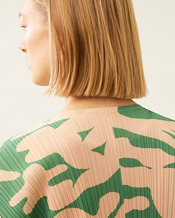

Issey Miyake was born in Hiroshima, Japan in 1938. He is a Japanese fashion designer, and after his success in Paris, he returned to Japan and decided to explore the underlying spirit behind the kimono with material made in Japan. He focuses on humane thinking in his design. He believes that people need clothing that can be worn at any time, facilitate travel, easy to keep and comfortable, rather than clothes that are maintained and sent to dry cleaners all day. Therefore, the pleated fabric that he designed could be rolled up, tied into a ball, not dry-cleaned or ironed. When you wear it, it is still flat. To make the fabric, the fabric is sewn it into shape and pressed into permanent pleats by a machine. Then your body can support it in the perfect structure. This is a brand called Pleats Please Issey Miyake.
[image] Available at: Issey Miyake's digital catalogue
[Accessed 30 March 2020].
Issey Miyake’s design extends into the field of fabric design applying modern technology and combining his personal ideal to create unique and incredible fabrics and garments from traditional fabrics. The fabrics he designed were always unexpected with a magical effect. Besides, he likes to use the splicing fabric with large color blocks to change the modeling effect, which especially strengthens the individual integrity of the wearer and making his design striking and different. Overall, this is a revolutionary event on clothing fabrics. Because the language of clothing design is not beautiful and attractive works, but simple and clear action, such as connection, pleating, folding and crimping.
[image] Available
at: Issey Miyake's digital catalogue<>[Accessed 30 March 2020].